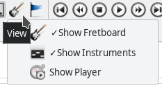

- Getting started
- Making and editing a song
- Tools and settings
Editing a whole song
Song is consisted out of tracks, so when you are editing a song most of the time you edit the tracks, one by one, which is explained in the Editing a track section. But there are some options that affect the song as a whole.
Managing the tracks
Each song consists of one or more tracks. In any moment you can add or remove a track, create new one by copying contents of the selected one (clone track). If you want to add a percussion track, you have to check the Percussion Track box in the Track Properties.
All the tracks are displayed in the instrument list, located on the bottom of the application window. You can rearrange the order of the instruments on that list by choosing Track → Move up/down from the main menu. You can also mute a single track (Solo) or mute all but one track (Solo). If you double-click on the instrument name on the list, the Track properties dialog will appear, where you can modify instrument, track name, colour and tunning.
Instruments dialog

The Instruments dialog can be accessed by choosing View → Show Instruments from the main menu, or by clicking on the icon in the toolbar (see below).

The most insteresting feature of the Instruments dialog is adjusting volume for each track (to be more precise: for each MIDI channel) with the first control dial.
You can also set pan for each track - balance between left and right speaker.
The other control dials are for the effects Reverb, Chorus, Tremolo and Phaser.
Choosing the channels
The channels for the track are chosen in the Channels Settings dialog.
To understand the way of distributing channels properly, you have to know something about MIDI specification.
MIDI uses channels to play music - each channel has currently assigned instrument (voice). There are 16 different channels (marked 0..15) - channel 9 is reserved for drums and percussion.
For example, to be able to play a dead note and a tone in the same time, TuxGuitar has to occupy two channels for a track, because dead note is one instrument (voice) and guitar tone is another instrument. So every track has its Normal Channel, but also needs the Effect Channel. Because there are only 16 channels it may lead you to conclusion that you cannot have more than 7 instruments (tracks) and a percussion in TuxGuitar. That is not true.
It means that as long as you don’t have more than 7 instruments and a percussion, you don’t have to worry about distributing MIDI channels - TuxGuitar distributes the channels in order. But if you have more tracks you have to be careful. By overlapping MIDI channels you can achieve MIDI reproduction without any problems, but you have to understand the problem.
Effect channel
Effect channel is used in certain occasions. One ocasion is when two different voices are played in the same time in the same track. In TuxGuitar that can happen if you play dead note or harmonic in the same time with an ordinary instrument tone.
The other occasion effect channel is used is when you apply some pitch effect (like bend, slide, vibrato or tremolo bar) on some of the notes played in the same time in same track/channel. The reason for this is because by MIDI specification effect can be applied only on channel, not on note. So TuxGuitar automatically moves note to Effect channel and apply pitch effect on him. That is also the reason why you cannot apply slide and bend effect in the exact same time in TuxGuitar (but also on a real guitar :).
How to overlap channels?
The safest way is to overlap channels of two tracks that are never played in the same time. The only problem is that mixer settings (volume, pan and solo/mute) would have the same value for both the instruments (tracks).
You can also try to assign the same channel for channel (CH) and effects channel (EC) if you don’t use effects like dead note, harmonics in the same time with an ordinary instrument note, or you don’t need to apply “pitch” effect on only some notes played in the same time with notes without pitch effect. If you do use effects but set the same CH and EC, dead note and harmonics probably wouldn’t be heard, and pitch effects would apply on all the notes in the same time.
Composition properties
You don’t want your transcription to be distributed in cyberspace without any credits. :)
By selecting Composition → Properties from the main menu or clicking on the appropriate icon you invoke dialog that contains information about the current song.

Every song should have name, author and transcriber set, both for archiving and printing purpose. Read more details.